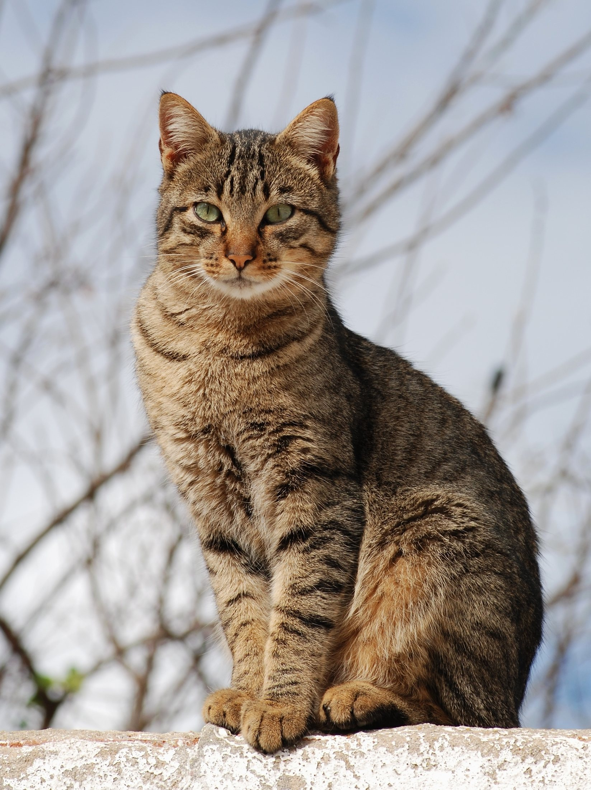
Cats!
Soft, furry, and full of surprises

Soft, furry, and full of surprises
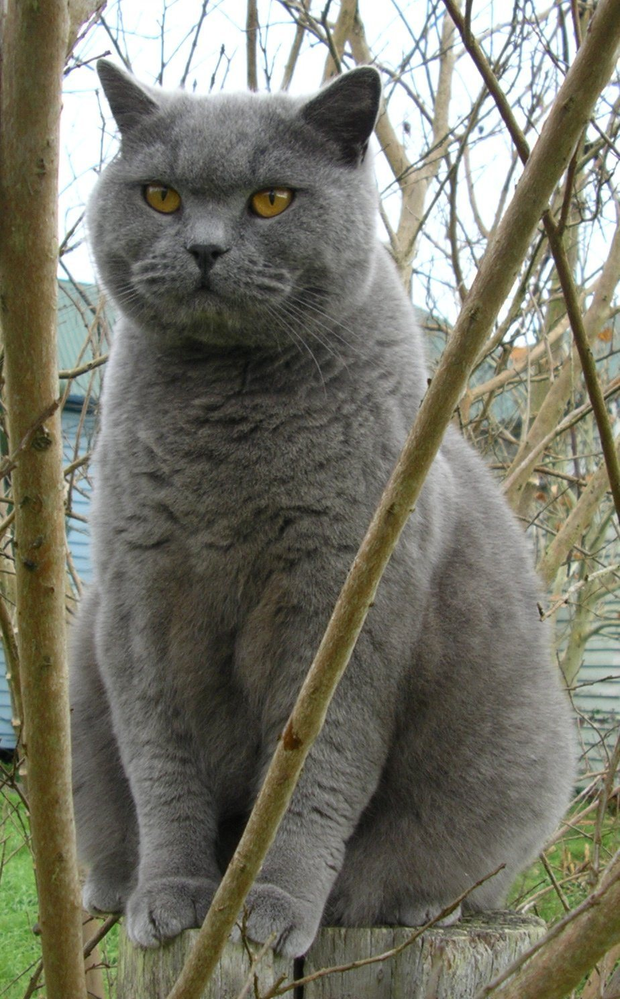
Hello, cat! Cats are small, furry animals. They have soft coats, pointy ears, and long tails. They come in many colors -- orange, black, white, and gray.
Look at those big eyes! Cat eyes can see in the dark, much better than yours. In bright light, their pupils shrink to tiny slits. In the dark, they open wide and round.
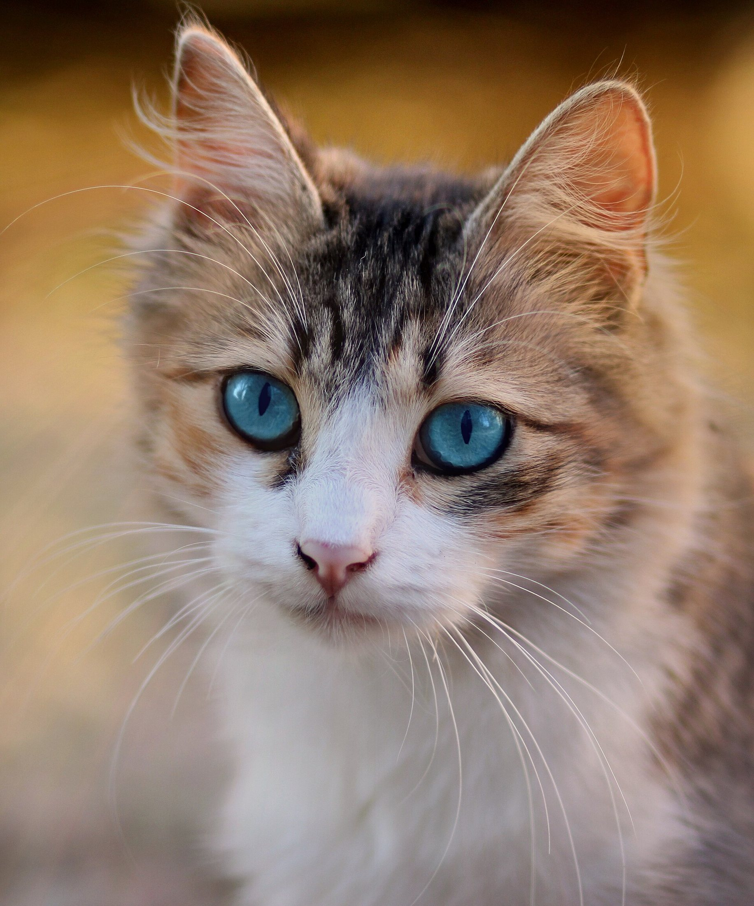
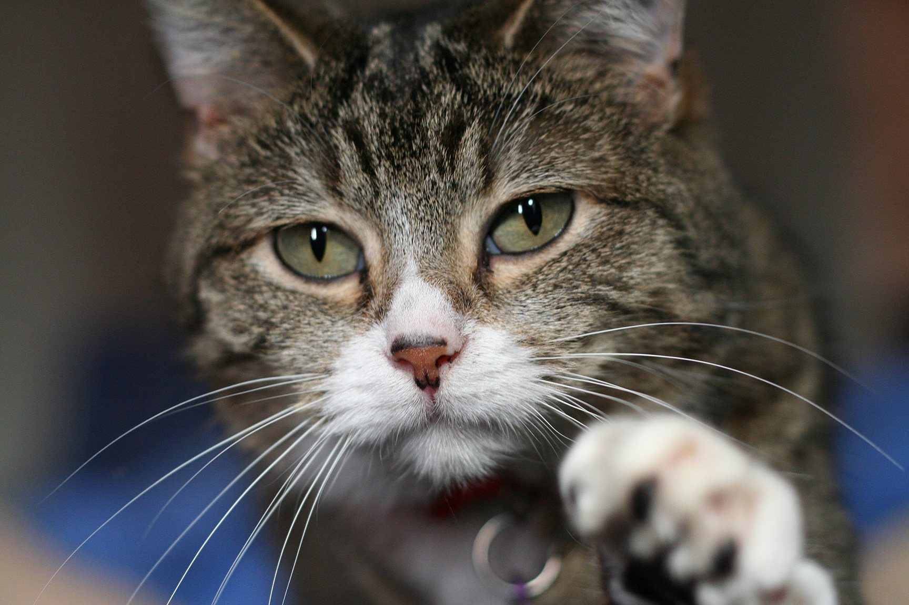
Feel those whiskers! Cats have long whiskers on their face. Whiskers help cats feel their way around, even in the dark. They can tell if a space is too small to squeeze through.
Cats walk on their tippy-toes. That is why they are so quiet! They can jump high and climb up tall things. Their bendy bodies can squeeze through tiny spaces.
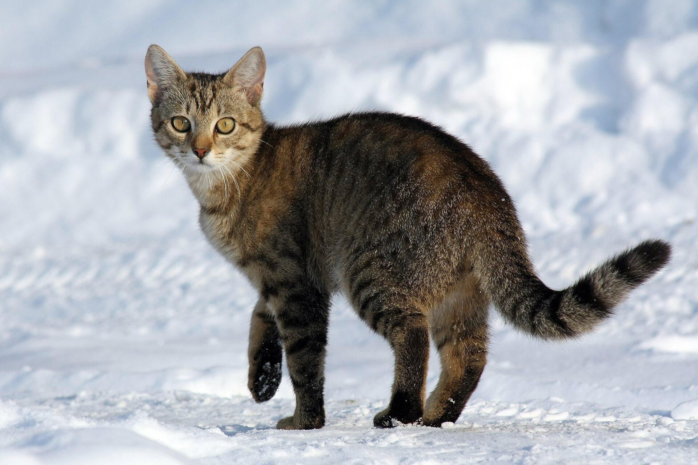
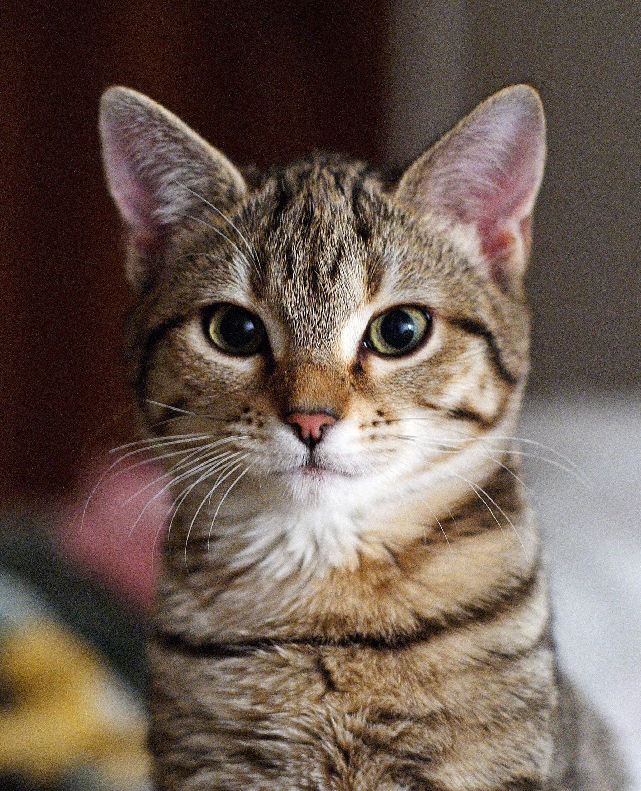
What does a cat say? Meow! Cats meow to talk to people. When a cat is happy, it purrs. When a cat is scared, it hisses. Mother cats make little chirping sounds to call their kittens.
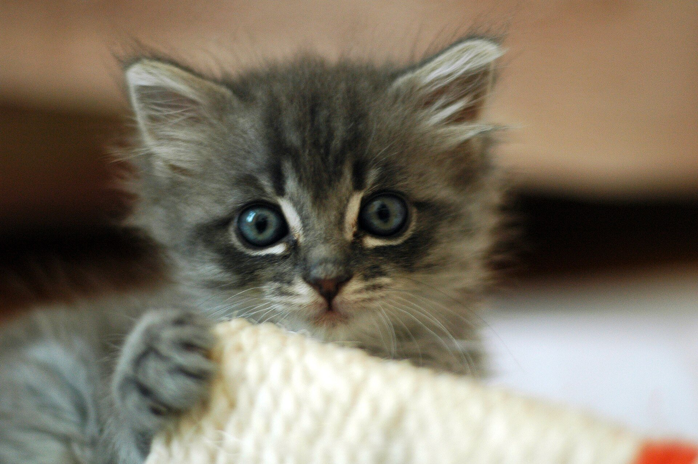
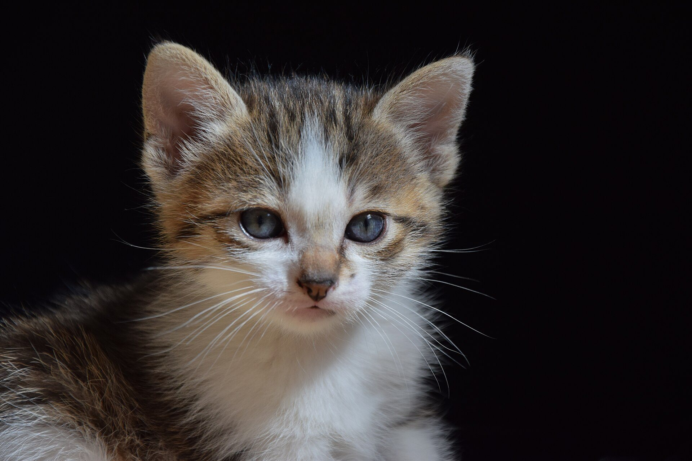
Baby cats are called kittens. They are born tiny, with their eyes shut tight. After two weeks, their eyes open! Kittens drink milk from their mama and love to play.
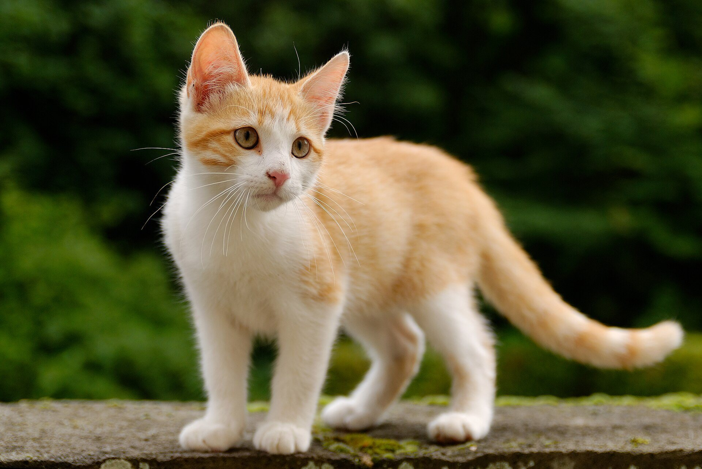
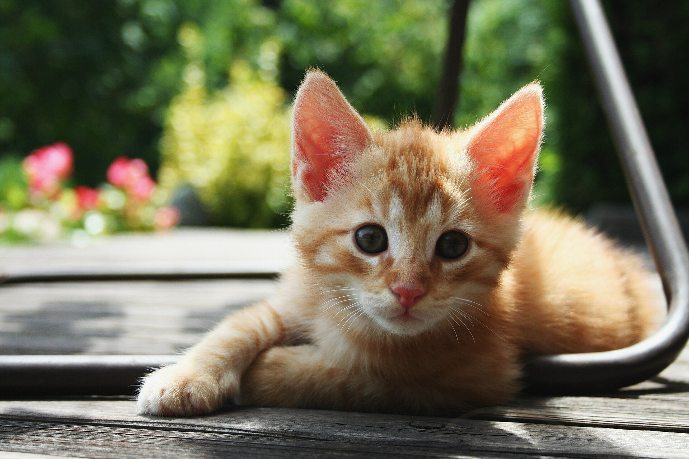
Kittens love to play! They chase, pounce, and tumble. Playing helps kittens learn to be big, strong cats.
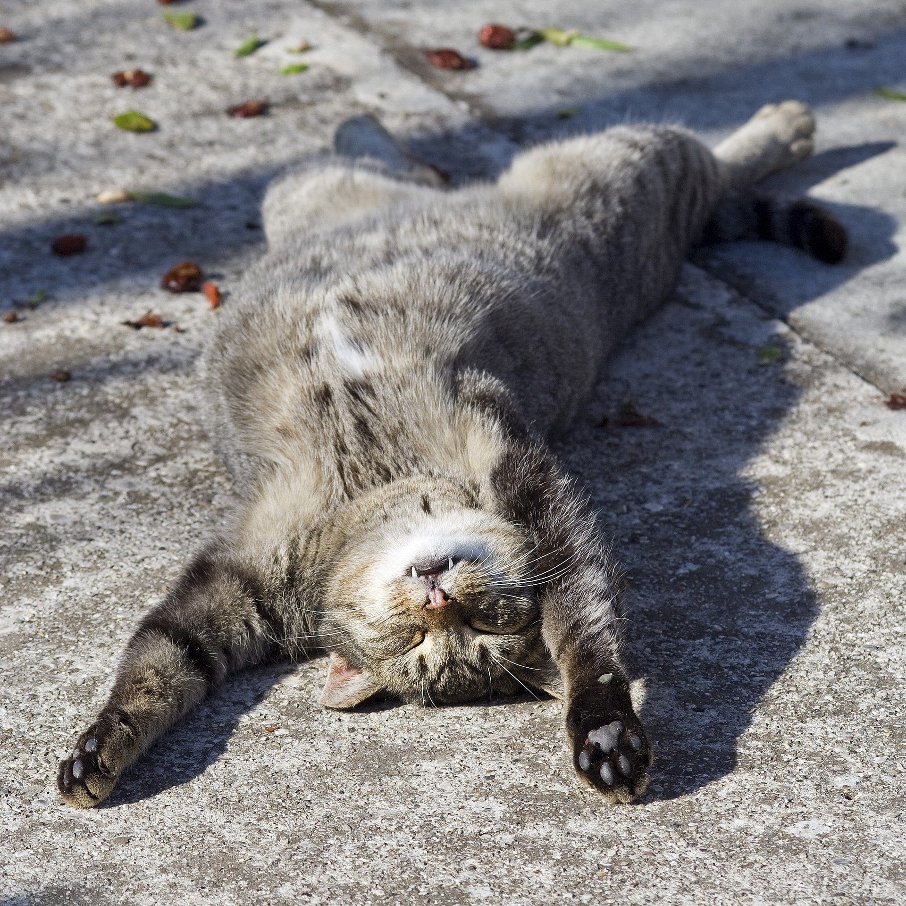
Shh -- the cat is sleeping! Cats sleep a lot. They nap and nap and nap. Some cats sleep for sixteen hours a day! That is where we get the word "catnap."
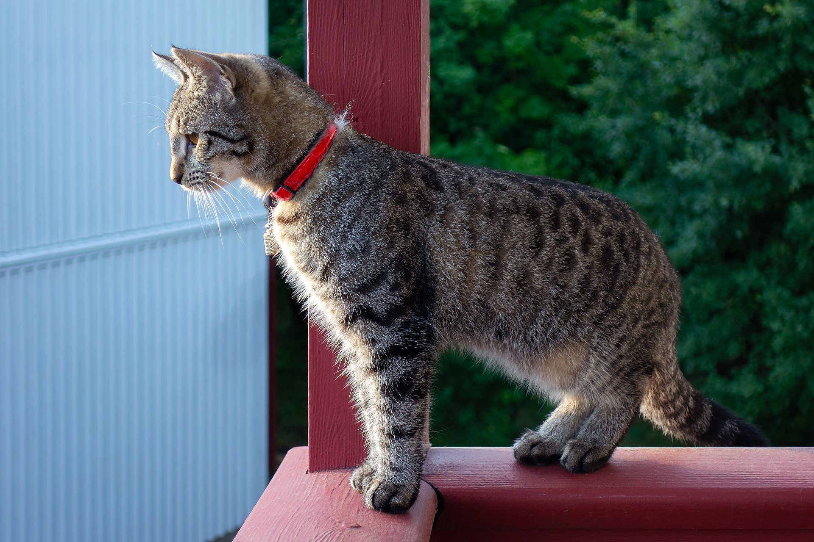
See the cat's tail? When a cat holds its tail straight up, it is saying hello! A puffy tail means the cat is scared. Tails help cats balance when they climb and jump.
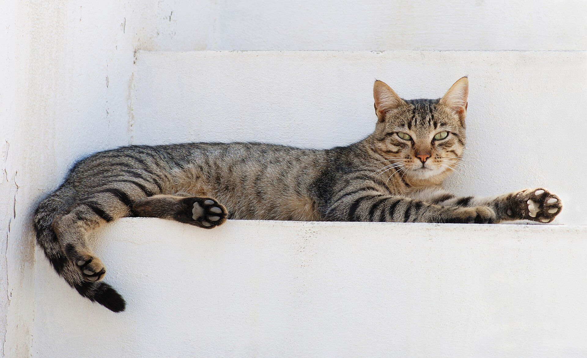
Cats have soft, padded paws. Their sharp claws hide inside! Claws pop out for climbing and scratching. Cats lick their fur to stay clean -- their bumpy tongue works like a little brush.
Cats are one of the most popular pets in the world. People have loved cats for a very long time. Would you like to pet a cat? They are soft, warm, and wonderful.
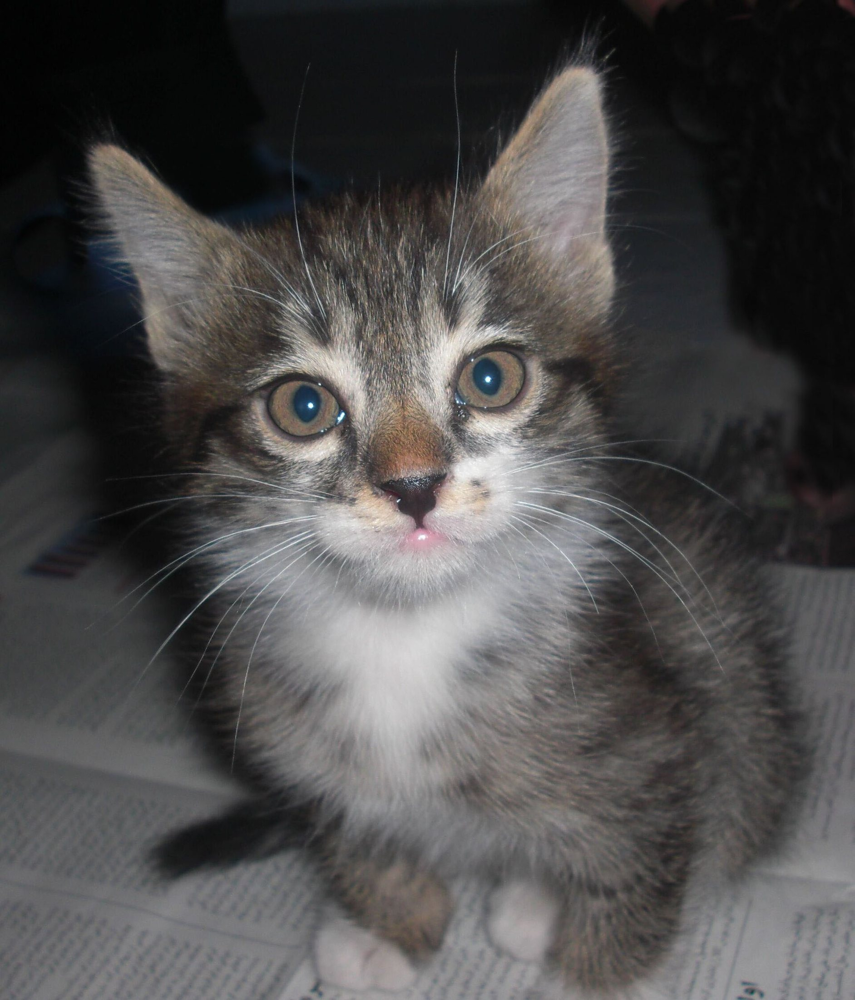